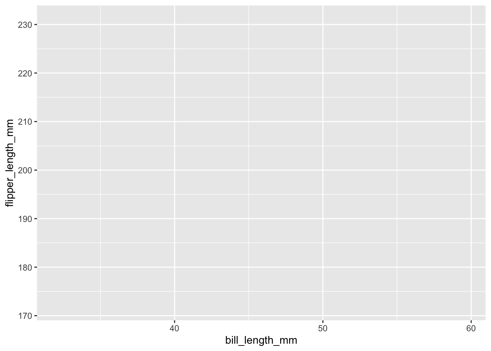
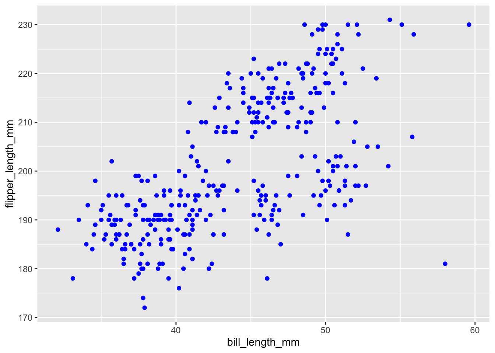

The first thing that you should always do when starting a new analysis is load in all the packages you think you’ll need in the very first chunk of code, usually labeled setup, as you can see below.
As you proceed with your analysis you might find that you need to load some additional packages. If that’s the case, good practice is to add those packages to the setup chunk and not just load them into the chunk you’re working on. Having all the packages you used for an analysis listed at the beginning makes it easier for someone trying to replicate your analysis to install everything they need, without having to scroll through your potentially lengthy document to find all the packages you used.
For our analysis today we’re going to be using the palmerpenguins package for our data, and ggplot2 which is part of the tidyverse family of functions, which we’ll learn more about in the coming days and weeks! These packages don’t come with R to start, so we need to install them using a function called install.packages().
#Here we were downloading, installing, and loading our packages
#install.packages("palmerpenguins")
#install.packages("tidyverse")
library("palmerpenguins")
library("tidyverse")## ── Attaching packages ─────────────────────────────────────── tidyverse 1.3.1 ──## ✓ ggplot2 3.3.5 ✓ purrr 0.3.4
## ✓ tibble 3.1.3 ✓ dplyr 1.0.7
## ✓ tidyr 1.1.3 ✓ stringr 1.4.0
## ✓ readr 2.0.0 ✓ forcats 0.5.1## ── Conflicts ────────────────────────────────────────── tidyverse_conflicts() ──
## x dplyr::filter() masks stats::filter()
## x dplyr::lag() masks stats::lag()Before visualizing or doing any kind of data analysis you should examine your data. What variables are you working with? How many observations are in your data set? Is there any missing data? What data types are represented?
Knowing all this information can help you make a plan for the analyses you want to perform (e.g. a linear model) and how you want to visualize it (line plot).
To see what information is stored in an object in R you type out the name, in our case penguins, and then type Cmd + Enter or Ctrl + Enter depending on your device. You should now see the first few rows of the peguin dataset reported below the code chunk!
penguins## # A tibble: 344 × 8
## species island bill_length_mm bill_depth_mm flipper_length_mm body_mass_g
## <fct> <fct> <dbl> <dbl> <int> <int>
## 1 Adelie Torgersen 39.1 18.7 181 3750
## 2 Adelie Torgersen 39.5 17.4 186 3800
## 3 Adelie Torgersen 40.3 18 195 3250
## 4 Adelie Torgersen NA NA NA NA
## 5 Adelie Torgersen 36.7 19.3 193 3450
## 6 Adelie Torgersen 39.3 20.6 190 3650
## 7 Adelie Torgersen 38.9 17.8 181 3625
## 8 Adelie Torgersen 39.2 19.6 195 4675
## 9 Adelie Torgersen 34.1 18.1 193 3475
## 10 Adelie Torgersen 42 20.2 190 4250
## # … with 334 more rows, and 2 more variables: sex <fct>, year <int>We’ll be using the ggplot2 package to plot our data, which contains a host of helpful functions that add a “grammar of graphics” to visualizations in R. The ggplot() function takes the data you want to plot as well as the specific variables you’re interested in and plots them on a coordinate plane:
ggplot(data = penguins, mapping = aes(x = bill_length_mm, y = flipper_length_mm))
Using the ggplot function alone is like trying to pass off a blank canvas as a work of art. You haven’t done any of the steps to actually paint the picture. If your variables are the paint, the geometries or geoms are the paint brushes that help determine how those variables appear on the canvas.
Every geom has the form geom_thing(). Each new geom is added to the initial ggplot function call using the + symbol. Let’s make a scatterplot looking at the relationship between the body_mass_g and flipper_length_mm. Which geom do you think we should use to make the plot? Where do you think you could find some “help” if you’re stuck?
ggplot(data = penguins, mapping = aes(x = bill_length_mm, y = flipper_length_mm)) +
geom_point()## Warning: Removed 2 rows containing missing values (geom_point).
ggplot(penguins, aes(bill_length_mm, flipper_length_mm)) +
geom_point()## Warning: Removed 2 rows containing missing values (geom_point).
ggplot(penguins) +
geom_point(aes(bill_length_mm, flipper_length_mm))## Warning: Removed 2 rows containing missing values (geom_point).
The penguins dataset contains information on three different species: Gentoo, Adelie, and Chinstrap. What ways could we Jazz Up (tm) this plot to identify which points belong to which penguins?
ggplot(data = penguins, mapping = aes(x = bill_length_mm, y = flipper_length_mm, color = species)) +
geom_point()## Warning: Removed 2 rows containing missing values (geom_point).
ggplot(data = penguins, mapping = aes(x = bill_length_mm, y = flipper_length_mm, shape = species)) +
geom_point()## Warning: Removed 2 rows containing missing values (geom_point).ggplot(data = penguins, mapping = aes(x = bill_length_mm, y = flipper_length_mm, shape = species, color = sex)) +
geom_point()## Warning: Removed 2 rows containing missing values (geom_point).ggplot(data = penguins, mapping = aes(x = bill_length_mm, y = flipper_length_mm)) +
geom_point(color = "blue")## Warning: Removed 2 rows containing missing values (geom_point).
There are geoms that allow us to plot lines of best fit using different statistical methods like a linear model and others that make it easier to show significant differences between two groups within your data.
ggplot(data = penguins, mapping = aes(x = bill_length_mm, y = flipper_length_mm, color = species)) +
geom_point() +
geom_smooth(model = "lm")## Warning: Ignoring unknown parameters: model## `geom_smooth()` using method = 'loess' and formula 'y ~ x'## Warning: Removed 2 rows containing non-finite values (stat_smooth).## Warning: Removed 2 rows containing missing values (geom_point).When preparing our plots for publication, we want to ensure that they are as informative as possible. There are several built in functions that help to personalize the title, axis labels, and other text aspects of the plot.
ggplot(data = penguins, mapping = aes(x = bill_length_mm, y = flipper_length_mm, color = species)) +
geom_point() +
geom_smooth(model = "lm") +
labs(x = "Bill Length (mm)",
y = "Flipper Length (mm)",
title = "Comparing Flipper Length and Bill Length of Penguins",
color = "Species of Penguin")## Warning: Ignoring unknown parameters: model## `geom_smooth()` using method = 'loess' and formula 'y ~ x'## Warning: Removed 2 rows containing non-finite values (stat_smooth).## Warning: Removed 2 rows containing missing values (geom_point).once you’re happy with your plot, you can save it using the ggsave() function which allows you to specify the kind of image file you want to save the plot as in addition to the resolution you want.
ggplot(data = penguins, mapping = aes(x = bill_length_mm, y = flipper_length_mm, color = species)) +
geom_smooth(model = "lm") +
geom_point() +
labs(x = "Bill Length (mm)",
y = "Flipper Length (mm)",
title = "Comparing Flipper Length and Bill Length of Penguins",
color = "Species of Penguin")## Warning: Ignoring unknown parameters: model## `geom_smooth()` using method = 'loess' and formula 'y ~ x'## Warning: Removed 2 rows containing non-finite values (stat_smooth).## Warning: Removed 2 rows containing missing values (geom_point).